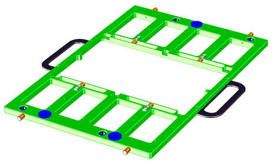
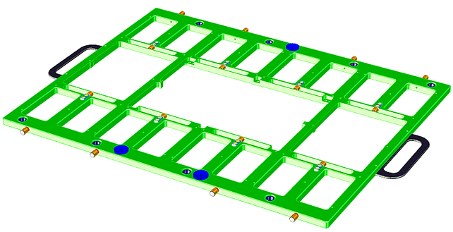
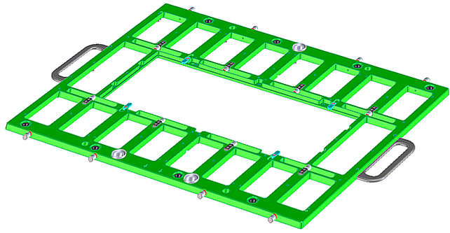

DUT board stiffeners
DUT board stiffeners provide the necessary mechanical stability to resist the pressure exerted on the DUT board by the pogo pins and to ensure board flatness over the entire contact area of the DUT board.
Stiffeners also provide the locking elements for docking the DUT board assembly to the DUT interface (see DUT board and interface alignment).
To ensure long-term reliable contact to all pogo pins, it is essential that stiffeners are manufactured to close mechanical tolerances. For best results, it is recommended that you purchase stiffeners directly from Advantest.
If you choose to manufacture your own stiffeners, closely follow the instructions in the referenced drawings. Advantest is not responsible for direct or indirect damages caused by the use of non-Advantest stiffeners.
Before manufacturing or ordering DUT board stiffeners, confirm that a standard DUT interface is in use. If the DUT interface has been modified, contact Advantest before proceeding.
Versions of the DUT board stiffener
The V93000 supports three DUT board stiffeners for the DUT interface:
- Half-size stiffener (E6980DA) - Small DUT interface stiffener
- Full-size stiffener (E6980EA) - Large DUT interface stiffener
- Full-size stiffener with a wide opening (E6980-64140)
- Half-size stiffener (E6980DA) - Small DUT interface stiffener
-

For design drawings, refer to Small stiffener assembly for small DUT board (E6980DA / E6980-64110) in Stiffener general purpose.
- Full-size stiffener (E6980EA) - Large DUT interface stiffener
-

For design drawings, refer to Large stiffener assembly for large DUT board (E6980EA / E6980-64120) in Stiffener general purpose.
- Full-size stiffener with a wide opening (E6980-64140)
- The full-size stiffener with wide opening is a 3rd party fabrication package. Use it for final test applications which require additional space. For example, applications with more than 8 sites, where the additional DUTs would interfere with the ribs of the large stiffener, or RF applications with bulky or a large number of components.

For design drawings, refer to Stiffener Wide Opening x16 sites (E6980-64140) (no Advantest product).
Either size DUT board stiffener can be docked to either size DUT interface. When you use a half-size stiffener with the large DUT interface, protect all exposed pogo blocks by installing non-conducting plates to cover these blocks. These non-conducting plates are supplied with each large DUT interface.
The E6980EA and E6980DA stiffeners can also be used on DUT boards for the Pin Scale-installed system.
DUT board stiffeners must be equipped with inlays for docking to handlers. Inlay plates add mechanical rigidity to the DUT board for the docking process. See Stiffener inlay plates.
Functional changes
- Introduced before SmarTest 6.3.2
- SmarTest 7.2.1: Full-size stiffener with wide opening